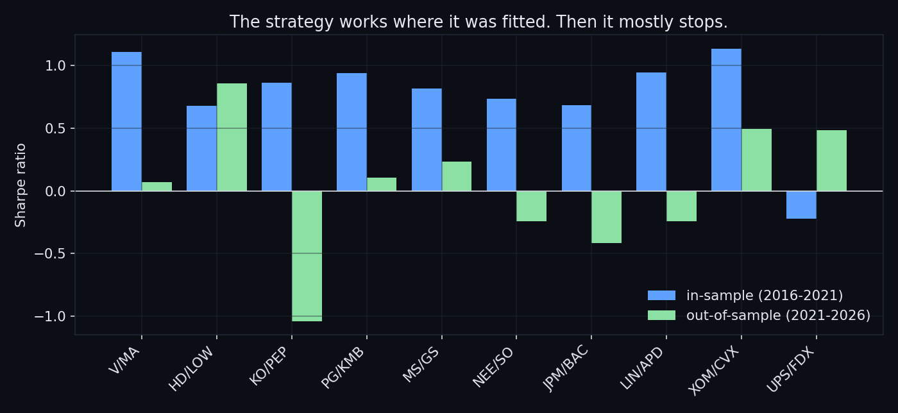

The classic market-neutral strategy, backtested like it could lose.
Pairs trading: find two stocks that move together, bet on the gap closing
when they drift apart. Every tutorial says it works. This study takes the ten most
obvious pairs in the US market, tests each one for cointegration on five years of data,
then trades it for the next five years with frozen parameters and real transaction
costs. Most of them fail. The failures are the finding.
01
The verdict, up front
Pairs tested
10
the most obvious in the US market
Cointegrated at 5%
4
ADF on 5y formation spread
Median out-of-sample Sharpe
-
all 10 pairs, with costs
Survivor
HD/LOW
Read this first. In-sample, eight of ten pairs show a Sharpe between
0.7 and 1.1. That is the number a backtest tutorial would report. Out-of-sample, with the
hedge ratio and entry bands frozen at the 2021 boundary and never touched again, the median
pair makes about nothing and four lose money. One pair survives both windows. One pair
makes money with no statistical right to. Both facts are reported below, along with the
catch: even the survivor trades only three times in five years.

02
All ten pairs, no cherry-picking
Formation: . Trading: .
ADF is the augmented Dickey-Fuller t-statistic on the formation-period log spread
(more negative means stronger mean-reversion evidence; -2.86 is the 5% line).
Half-life is the OU estimate in trading days. Click a row for the honest one-liner.
Pair
ADF t
Half-life
In-sample Sharpe
Out Sharpe
Out return
Max DD
Trades
03
The survivor under the microscope
Home Depot vs Lowe's: same industry, same macro exposures, the cleanest
economic story in the set. Its spread mean-reverts with a 44-day half-life, and it is the
only pair whose out-of-sample Sharpe () beats its in-sample one.
Top chart: the spread z-score with the frozen entry and exit bands. Bottom: equity with
and without costs. Hover for values.
Robustness: the result does not depend on the exact
entry band or the cost assumption. It does depend on very few trades - three closed
round trips in five years - so treat the Sharpe as "encouraging", not "proven".
Entry |z|
Cost per side
Trades
Return
Sharpe
04
How the others failed
Three failure modes, all measured.
1. Worked in the fit window, died after. Visa/Mastercard has the strongest
cointegration evidence of the ten and a 19-day half-life - and an out-of-sample Sharpe of
0.07. The relationship that made it attractive was already arbitraged away by the time the
test started.
2. Broke structurally. Coke/Pepsi, the textbook example, decoupled: one trade opened
in 2022 and never came back, -27%. Mean reversion is a property of a regime, and regimes
end.
3. Made money by luck. UPS/FedEx shows no cointegration at all (ADF t = -0.58, a
random walk spread) yet returned +23.6% on two trades. Reporting it next to the losses is
what keeps the study honest: with ten pairs and a handful of trades each, some results in
both directions are noise.
What I would tell someone citing this. The machinery
(cointegration testing, frozen parameters, next-close fills, costs on every position
change, an entry-band and cost sensitivity grid) is the real deliverable. The headline
"HD/LOW Sharpe 0.86" rests on three trades and would need a rolling-refit variant and
intraday data before anyone should size into it. This is a measurement of a strategy,
not a recommendation.